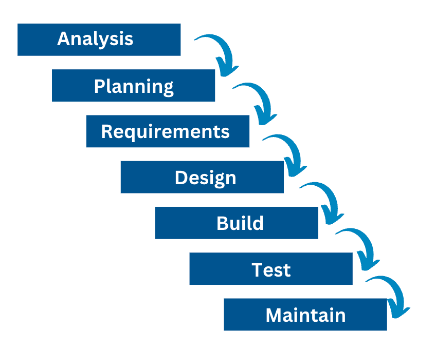
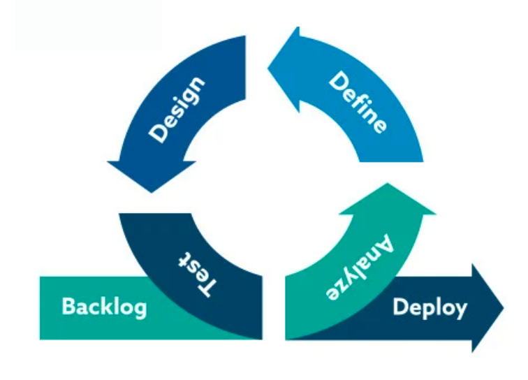
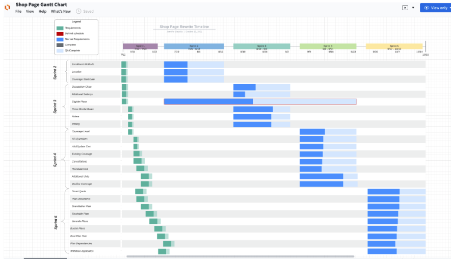
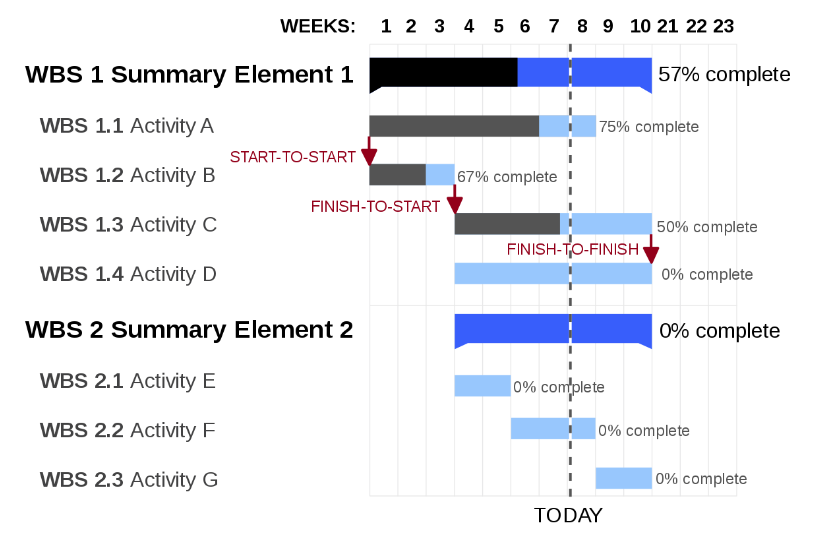
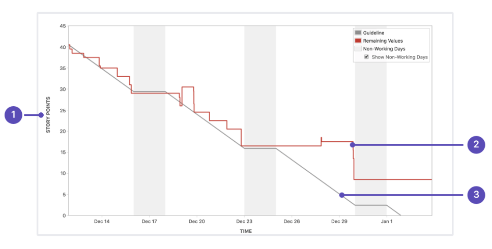
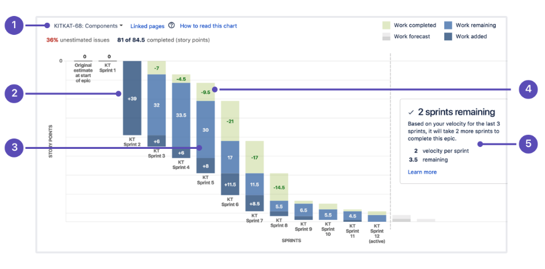

A Developer's Guide to Surviving Sh*t Project Management
Jennifer Wadella

Jennifer Wadella
@likeOMGitsFEDAY
- Director of Angular Development at Bitovi
- Angular GDE, Cohost of the Angular+ Show
- Kombucha brewin' crazy plant lady

This talk may contain strong language, harsh truths, and serious passion.

Goals for This Talk
- Address Common Problems with Project Management
- Teach the Basics of GOOD Project Management
- Give You Strategies for when Project Management Goes Off the Rails
Project management is the use of specific knowledge, skills, tools and techniques to hamper developer productivity.
Project management is the use of specific knowledge, skills, tools and techniques to deliver something of value to people.
Common Project Management Problems
Too much time in meetings
Requirements changing on the fly
QA reporting back bugs that aren't bugs
Sprints resulting in missed deadlines and deathmarches
Bugs missed in planning that resulting in overtime work
Too little process
Too much process
Burn down chart driven development
Unable to determine project timelines
Stand-ups so long your chair thinks you ghosted it every morning
In order to win the game, you have to know the rules.
Project Management Approaches
- Waterfall
- Agile
- XGH
XGH - Extreme Go Horse
23 Axioms to Live By for Professional Developers
11. XGH is anarchic.
There's no need for a project manager. There's no owner and everyone does whatever they want when the problems and requirements appear.
13. XGH is absolute.
Delivery dates and costs are absolute things. Quality is relative. Never think about quality but instead think about the minimum time required to implement a solution. Actually, don't think. Do!
23. More is more.
With XGH you thrive on code duplication - code quality is meaningless and there's no time for code reviews or refactoring.
Waterfall
Waterfall project management is a linear approach to delivering a project where phases are distinct & must be completed sequentially.
Pros
- Training is simple
- Easy to show progress
- Easy to manage
Cons
- Doesn’t allow for shifting requirements or change
- Difficult for complex projects with dependencies
- Slow feedback cycle
Agile
Agile project management is an iterative approach to delivering a project throughout its life cycle.
Manifesto for Agile Software Development
We are uncovering better ways of developing software by doing it and helping others do it.
Through this work we have come to value:
Individuals & interactions over processes and tools
Working software over comprehensive documentation
Customer collaboration over contract negotiation
Responding to change over following a plan
That is, while there is value in the items on the right, we value the items on the left more.
Agile Frameworks
- Kanban
- XP
- SCRUM
- SAFe
They share Agile philosophy, roles, and sometimes ceremonies.
https://badsoftwareadvice.substack.com/p/how-to-avoid-understanding-the-business
Kanban
Kanban is a framework that provides visibility to an entire process and is commonly used for agile and DevOps to drive continuous delivery and improvement.
The word kanban is Japanese and roughly translated means “card you can see.”
To Do
Save the Project from Failing
Acquire project management survival skills
Learn to love Jira
In Progress
Learn about Kanban
Done
Learn about Extreme Programming
Attend Jennifer's talk at Copenhagen Developers Festival
XP
Extreme Programming (XP) is an agile software development framework that aims to produce higher quality software, and higher quality of life for the development team.
Extreme Programming Practices
1. The Planning Game addresses two key questions in software development:
- predicting what will be accomplished by the due date
- determining what to do next.
2. Small Releases means the team releases running, tested software, delivering business value chosen by the Customer, every iteration. The most important aspect is that the software is visible, and given to the customer, at the end of every iteration.
3. Metaphor is a simple evocative description of how the program works, like “this program works like a hive of bees, going out for pollen & bringing it back to the hive” as a description for an agent-based information retrieval system.
4. Simple Design means building the simple solution first, and not abstracting before needed.
5. Testing builds tests against acceptance criteria and uses them to prove to themselves, and to the customer, that the feature is implemented correctly.
6. Refactoring Design improvement and removal of duplication (a sure sign of poor design), and on increasing the “cohesion” of the code, while lowering the “coupling”
7. Pair Programming All production software in XP is built by two programmers, sitting side by side, at the same machine.
8. Collective Ownership any pair of programmers can improve any code at any time, no one person is responsible for knowing how one area of the codebase works.
9. Continuous Integration multiple builds per day keep the system fully integrated at all times.
10. 40-hour week work life balance makes better software
11. On-site Customer Customer is involved with requirements and review of delivery.
12. Coding Standard Code must be formatted to agreed coding standards. Coding standards keep the code consistent and easy for the entire team to read and refactor. Code that looks the same encourages collective ownership.
SCRUM
Agile is a mindset, SCRUM is a framework. SCRUM describes a set of meetings, tools, and roles that work in concert to help teams structure and manage their work.
Key Concepts of SCRUM
- Artifacts
- Events
- Roles
SCRUM Artifacts
Product Backlog is the primary list of work that needs to get done maintained by the product owner or product manager. This is a dynamic list of features, requirements, enhancements, and fixes that acts as the input for the sprint backlog. It is, essentially, the team’s “To Do” list. The product backlog is constantly revisited, re-prioritized and maintained by the Product Owner because, as we learn more or as the market changes, items may no longer be relevant or problems may get solved in other ways.
Sprint Backlog is the list of items, user stories, or bug fixes, selected by the development team for implementation in the current sprint cycle. Before each sprint, in the sprint planning meeting the team chooses which items it will work on for the sprint from the product backlog. A sprint backlog may be flexible and can evolve during a sprint.
Increment (or Sprint Goal) is the usable end-product from a sprint. You may not hear the word “increment” out in the world, as it’s often referred to as the team’s definition of “Done”, a milestone, the sprint goal, or even a full version or a shipped epic. It just depends on how your teams defines “Done” and how you define your sprint goals. Typically this is what is demoed after the sprint.
SCRUM Events
Sprint is time period the team does work. Two weeks is a common sprint length. Team members should pull tasks from sprint backlog as they complete other tasks.
Sprint Planning is the meeting for the entire team to be understand the sprint goal, and commit to the work they think they can deliver. This is a time to review the definition of “done” for stories, clarify acceptance criteria, and agree on how they’ll execute the work.
Daily SCRUM/standup The purpose of the Daily Scrum is to inspect progress toward the Sprint Goal and adapt the Sprint Backlog as necessary, adjusting the upcoming planned work. Typically team answers:
- What did I do yesterday?
- What do I plan to do today?
- Are there any blockers?
Sprint Review is an informal session to demo the increment, or whatever was produced.
Sprint Retrospective is where the team comes together to document and discuss what worked and what didn’t work in a sprint, a project, people or relationships, tools, or even for certain ceremonies.
Backlog Grooming** is an ongoing task of reviewing the backlog for prioritization and checking relevancy of items.
Sprint Prep** is a meeting before sprint planning to propose a sprint goal and get sprint backlog ready for the upcoming sprint planning.
** teccccchnically these are not ceremonies, but are meetings that are important to have. = )
SCRUM Roles
Product Owner are the champions for their product. They are focused on understanding business, customer, and market requirements, then prioritizing the work to be done by the engineering team accordingly. Effective product owners:
- Build and manage the product backlog.
- Closely partner with the business & team to ensure everyone understands the work items in the backlog.
- Give the team clear guidance on which features to deliver next.
- Decide when to ship the product with a predisposition towards more frequent delivery.
SCRUM Master are the champions for scrum within their teams. They coach teams, product owners, and the business on the scrum process, and look for ways to fine-tune their practice of it. An effective scrum master deeply understands the work being done by the team and can help the team optimize their transparency and delivery flow. As the facilitator-in-chief, he/she schedules the needed resources (both human and logistical) for sprint planning, stand-up, sprint review, and the sprint retrospective.
SCRUM development team executes on the work to be done. Team members have differing skill sets, and cross-train each other so no one person becomes a bottleneck in the delivery of work. Strong scrum teams are self-organizing and approach their projects with a clear ‘we’ attitude. All members of the team help one another to ensure a successful sprint completion.
SAFe®
The Scaled Agile Framework® (SAFe®) is a system for implementing Agile, Lean, and DevOps practices at scale.
Principles of SAFe®
- Take an economic view
- Apply systems thinking
- Assume variability; preserve options
- Build incrementally with fast, integrating learning cycles
- Base milestones on objective evaluation of working systems
- Visualize and limit WIP, reduce batch sizes, and manage queue lengths
- Apply cadence, synchronize with cross-domain planning
- Unlock the intrinsic motivation of knowledge workers
- Decentralize decision-making
- Organize around value
Survival Strategies
- Identify Your Project Management Methodology
- Advocate for Good Meeting Hygiene
- Don't Be Afraid to Propose Process Changes
- Understand Stakeholder Motivation
- Know your Tools
- Use Charts for Good, Not Evil
Strategy One
Identify Your Project Management Methodology
Framework Comparisons
XP
- Work in iterations that are one or two weeks long.
- Flexible to change features within their iterations
- Work in a strict priority order
- Engineering practices - test-driven development, the focus on automated testing, pair programming, simple design, refactoring
Kanban
- Work on priority tasks whenever they come in
- Constant stream of work without any bottlenecks
- A Kanban board visualizes all the work within the project.
Scrum
- Self-organized
- Cross-functional development teams
- Work in close collaboration with the customer & stakeholders to add value to every step of the process
- Targeting a goal of continuous improvement.
SAFe®
- Agile at scale
- Working with multiple agile teams
- Cross domain planning
- Prioritization around business value
"None of the Above" and "all of the above" are also options 😬
Strategy Two
Advocate for Meeting Hygiene
Meetings aren't Evil
When they're used effectively they can improve productivity
Keep Daily Standup to 15 Minutes
- Choose a consistent place and time
- Avoid the blocker rabbit hole - this is not a problem-solving meeting 🙃
- Remember this is not a status meeting
- Developers inspect their progress toward the Sprint Goal
- Developers create a plan for the next working day
Meeting Coordinating Best Practices
- Ask "could this meeting be an email?"
- Create & send out an agenda ahead of time
- Outline topics
- Set a goal for the meeting outcome
- Ensure invite goes out to necessary people, and doesn't to people who don't need to be there
- Take notes during meeting (or select a scribe)
- Create action items, make sure anything to be done has an individual assigned to owning it’s execution
Gently Correct Meetings
"Could we table this discussion, and set another meeting to go more in depth with the people who need to be there?"
Use a Technical Decision Document
Capture key points of technical decision making discussions and save in your company wiki.
Strategy Three
Don't Be Afraid to Propose Process Changes
Bring up Concerns/Changes in Retrospectives
What's going well?
What Should We Continue Doing?
What Should We Stop Doing?
"Process does not exist unless it is documented" - Jennifer’s first rule of Project Management.
Process should aid development & help people follow the same steps to handle issues. Process includes tools like internal wikis, issue trackers, version control, UX feedback, QA feedback, deployment and more. Process should be iterated on and improved to avoid repeated bottlenecks
Create the Definition of Ready
"Ready" means that stories are be immediately actionable. The Team must be able to determine what needs to be done and the amount of work required to complete the ticket for it to be considered ready.
Me when I'm not constantly begging for requirements when I'm assigned a ticket for the sprint because our team added that to our definition of ready.
Create the Definition of Done
"Done" is an agreed-upon set of items that must be completed before a project or user story can be considered complete. It is applied consistently and serves as an official gate separating things from being “in progress” to “done.”
Create Workflows
A workflow can be defined as “orchestrated and repeatable pattern of activity”. Workflows must be created to execute on work. To create an appropriate workflow you may need to answer questions like:
How does the work that needs be done get described to the developer?
Are there mockups representing the work?
How are mockups delivered and described?
How can the developer verify the work has been completed?
How should a QA be able to test work?
How can acceptance criteria be created?
How should deployment work?
Is there user testing?
What happens if an issue is blocked?
Does code need to be reviewed in PRs?
Strategy Four
Understand Stakeholder Motivation
Who IS a stakeholder?
Any individual, group or organization that can affect, be affected by, or perceive itself to be affected by, an initiative
Strategy Five
Know Your Tools
Strategy Six
Use Charts for Good, Not Evil

Gantt Chart
A Gantt chart provides you the timeline view of your projects. It allows you to visualize how different tasks/activities of a project are connected with each other and how they fit in the overall timeline of the project.
 Burndown Chart
A burndown chart shows the amount of work that has been completed in an epic or sprint, and the total work remaining. Burndown charts are used to predict your team's likelihood of completing their work in the time available. They're also great for keeping the team aware of any scope creep that occurs.
 Charting Tools
- Best - Your Clients Project Management Tool (Jira, Trello, Radar, Github)
- Miro
- Lucidchart
- Good ol’ Google Sheets (or Excel 🤮)
- MS Project
Applying Strategies to Common Problems
Problem: Too Much Time in Meetings
Fix:
Is Our Current Project Management Approach Helping Us Reach our Business Goals for Shipping Software?
Questions?
Slides available at:
https://tehfedaykin.github.io/AngularMagicSchematicsSlides

Need help with  ? Work with me! jennifer@bitovi.com
? Work with me! jennifer@bitovi.com